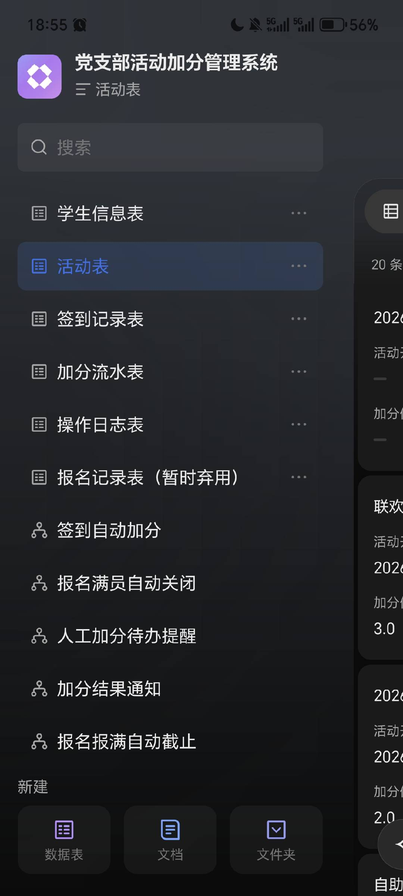
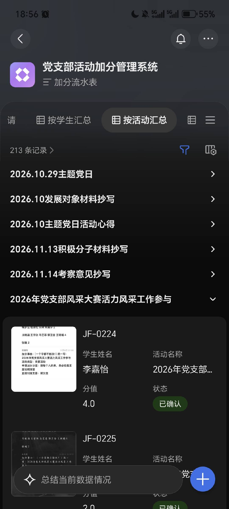

项目背景
党支部成员的加分管理流程，原有模式涉及签到、加分申请、审核、公示等多个环节，存在人工操作较多、信息分散和流程重复的问题。每次加分都需要成员与管理员之间多轮人工传递与核对。
需求拆解
将业务需求拆解为四个核心模块：
01
签到模块
02
自助申请模块
03
审核模块
04
公示模块
系统设计
- 使用 AI 辅助完成需求转化和表单、自动化方案设计。
- 独立完成飞书多维表格的配置与流程串联。
核心流程
STEP 01签到
→
STEP 02信息匹配
→
STEP 03加分
→
STEP 04审核 / 公示
核心成果
5 步
原有人工操作
→
1 步
学生自助提交
- 原有人工 5 步操作 → 学生 1 步提交。
- 人工操作环节减少约 80%。
- 覆盖全体成员的日常加分记录，信息不再分散。
作品展示
以下是系统实际界面截图（飞书多维表格）。其余模块（自动化流程配置、审核与公示页面）待补充截图后替换占位。


自动化流程配置
待补充截图
审核与公示页面
待补充截图
项目复盘与经验总结
- 需求拆解是流程化的第一步：把模糊的「管理加分」拆成可独立设计的模块。
- AI 的价值在于加速需求转化与方案设计，最终落地仍需人工完成配置与串联。
- 流程优化的衡量标准应落到「操作步骤数」与「人工环节占比」等可量化指标。